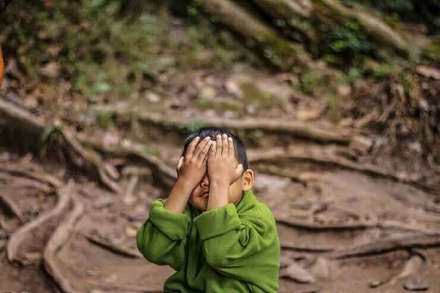
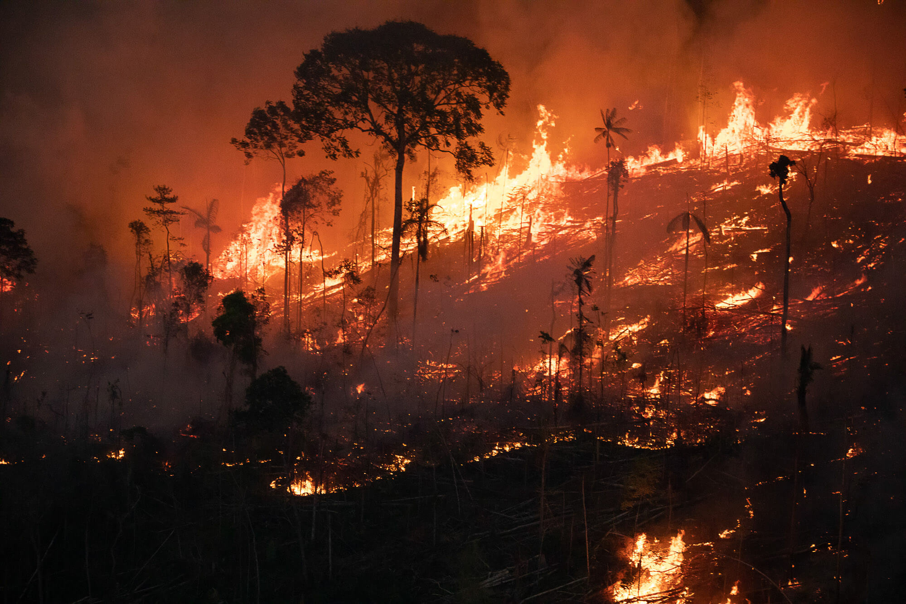
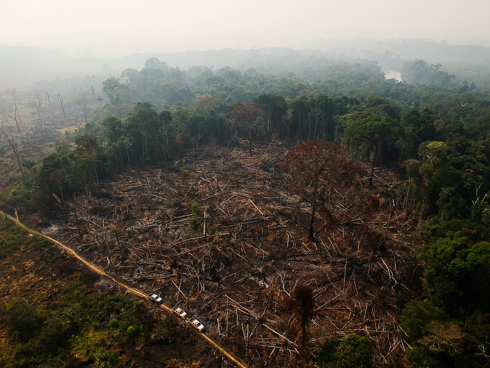
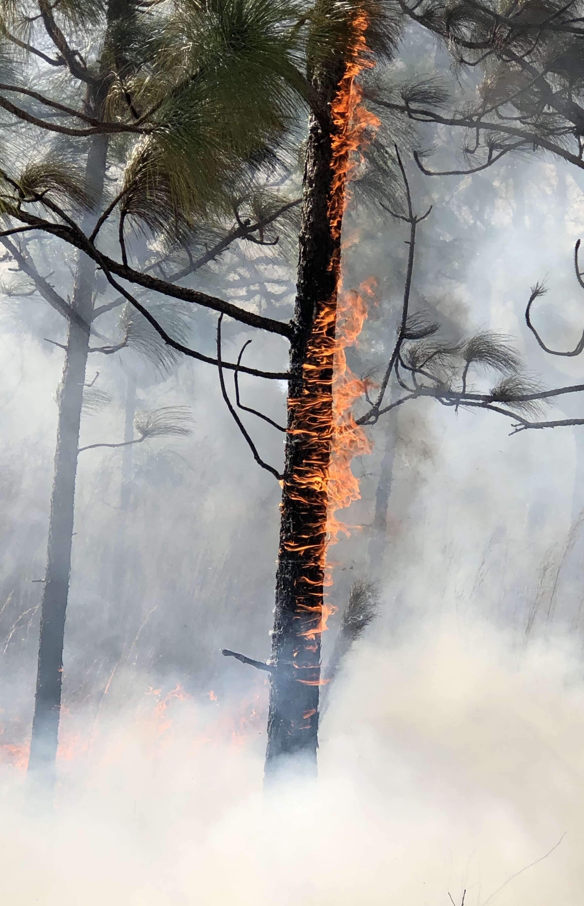
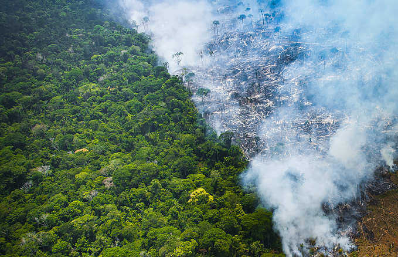
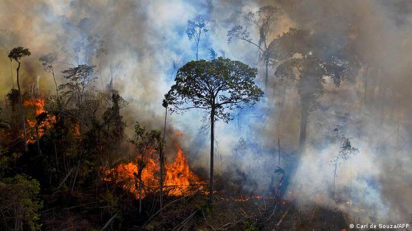
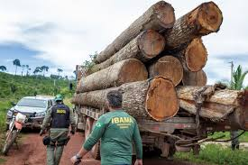

OS PROBLEMAS DA FLORESTA AMAZÔNICA
Uma das principais ameaças à Floresta Amazônica é o desmatamento,
impulsionado principalmente pela agricultura, mineração, extração
ilegal de madeira e infraestrutura, como estradas e barragens.

DESMATAMENTOS
O desmatamento na Amazônia é uma das principais ameaças à sua
sobrevivência. A derrubada de árvores para atividades como
agricultura, pecuária e exploração madeireira resulta na perda
irreparável de seu habitat, contribuindo para a extinção de espécies
nativas, desequilíbrio ambiental, impactos na fauna e na flora, tudo
isso causando consequências para o Brasil e o mundo.
Segundo dados do Prodes (Projeto de Monitoramento do Desmatamento na
Amazônia Legal por Satélite), de agosto de 2022 a julho de 2023, a
Amazônia perdeu 9.001 Km², essa área é equivalente a 7,5 vezes a
cidade do Rio de Janeiro
Anualmente, o Ministério do Meio Ambiente e Mudança Climática, através
do Programa de Monitoramento do Desmatamento da Floresta Amazônica
Brasileira por Satélite (Prodes) do Instituto
Nacional de Pesquisas Espaciais (INPE), conduz um
levantamento anual sobre a perda de cobertura florestal na Amazônia.
Essa análise permite o acompanhamento das taxas de desmatamento na
região ao longo do tempo. Os dados de desmatamentos podem ser
acessados facilmente no site do
Instituto Nacional de Pesquisas Espaciais
ESTADOS QUE MAIS DESMATARAM
Segundo os dados do TerraBrasilis, no período de 2019 à 2024, o
Pará é o estado que lidera com maior número de
desmatamentos e focos de queimadas no bioma Amazônico, com
36,7% (172.929 focos) no total de 471.223 mil números
de focos. Seguido pelo estado do Amazonas, com
17,6% (82.868 focos). E o terceiro do Ranking é o
Mato Grosso, bem próximo do segundo colocado do
ranking, com 17,3% (81.563 focos). Os dados obtidos
são disponibilizados pela plataforma do
TerraBrasilis

O monitoramento via satélite possibilita a identificação das áreas da
floresta Amazônica impactadas por focos de incêndio e pelos
desmatamentos resultantes de atividades como garimpo, agricultura,
exploração madeireira, entre outras. Essa abordagem oferece uma visão
abrangente e precisa das áreas afetadas, permitindo uma resposta mais
eficaz para conter e mitigar esses impactos ambientais. Além disso, o
uso de tecnologias de sensoriamento remoto auxilia na identificação de
padrões e tendências de degradação florestal, fornecendo informações
valiosas para a tomada de decisões e o planejamento de ações de
conservação e manejo sustentável da Amazônia.
QUEIMADAS
As queimadas na Amazônia representam uma crise ambiental de proporções
globais, ecoando alarmes sobre a saúde do nosso planeta. A Amazônia,
conhecida como o pulmão do mundo, é o maior bioma tropical do planeta
e um dos principais reguladores do clima global. No entanto, esse
ecossistema vital tem sido constantemente assolado por incêndios
devastadores. As causas das queimadas na Amazônia são diversas e
complexas, indo desde o desmatamento ilegal até as práticas agrícolas
e de criação de gado. O fogo muitas vezes é deliberadamente iniciado
para limpar terras, resultando em um ciclo vicioso de destruição que
compromete a biodiversidade, os recursos hídricos e o modo de vida de
comunidades indígenas e ribeirinhas.

Além das consequências locais, as queimadas na Amazônia têm
repercussões globais. A liberação de enormes quantidades de gases de
efeito estufa intensifica o aquecimento global, exacerbando os padrões
climáticos extremos e contribuindo para a perda irreparável de
ecossistemas preciosos. A destruição contínua dessas áreas florestais
coloca em risco não apenas as espécies de flora e fauna que dependem
delas, mas também a estabilidade climática global e a sustentabilidade
de comunidades em todo o mundo. Portanto, é crucial adotar medidas
urgentes para conter o desmatamento e as queimadas na Amazônia,
visando proteger não apenas esse ecossistema vital, mas também o
futuro do nosso planeta.
Combater as queimadas na Amazônia exige uma abordagem abrangente e
coordenada. Isso inclui fortalecer a aplicação das leis ambientais,
investir em monitoramento e fiscalização eficazes, promover
alternativas sustentáveis para o uso da terra e reconhecer e respeitar
os direitos das comunidades locais e indígenas sobre suas terras
ancestrais.
COMO AJUDAR?

As ONGs desempenham um papel fundamental nessa luta, trabalhando
incansavelmente para proteger e conservar esse ecossistema vital.
Existem várias maneiras pelas quais podemos ajudar essas organizações
em suas missões:
-
Doações financeiras: Contribuir com doações
financeiras é uma forma direta e eficaz de apoiar as ONGs que lutam
contra o desmatamento na Amazônia. Esses recursos são essenciais
para financiar projetos de conservação, monitoramento por satélite,
patrulhas de fiscalização e educação ambiental.
-
Voluntariado: Muitas ONGs oferecem oportunidades de
voluntariado para indivíduos interessados em contribuir com seu
tempo e habilidades para a causa. Isso pode envolver desde
atividades administrativas até trabalho de campo em projetos de
conservação e sensibilização ambiental.
-
Advocacia e conscientização: Aumentar a
conscientização sobre a importância da Amazônia e os impactos do
desmatamento é fundamental para mobilizar ações em prol da sua
proteção. Compartilhe informações nas redes sociais, participe de
campanhas de sensibilização e defenda políticas ambientais que
promovam a conservação da floresta.
-
Consumo responsável: Optar por produtos
sustentáveis, certificados e provenientes de práticas ambientalmente
responsáveis pode ajudar a reduzir a demanda por recursos naturais
da Amazônia e incentivar práticas de produção mais sustentáveis.
-
Engajamento comunitário: Apoiar iniciativas
comunitárias locais na Amazônia, como projetos de agrofloresta,
ecoturismo e desenvolvimento sustentável, fortalece as comunidades
locais e contribui para a conservação da floresta.
-
Pressão política: Exercer pressão sobre governos e
empresas para adotarem políticas e práticas que promovam a
conservação da Amazônia é fundamental. Isso pode incluir participar
de petições, enviar cartas aos representantes políticos e exigir
transparência e responsabilidade das empresas que operam na região.
Principais ONGs
- ONG Zoé
- IPÊ – Instituto de Pesquisas Ecológicas
- Associação Vaga Lume
-
IDESAM – Instituto de Conservação e Desenvolvimento Sustentável da
Amazônia
- FAS – Fundação Amazonas Sustentável
- ISA – Instituto Socioambiental
-
COIAB – Coordenação das Organizações Indígenas da Amazônia
Brasileira
- EDS – Expedicionários da Saúde
- PSA – Projeto Saúde e Alegria
- Greenpeace Brasil
GALERIA






MÍDIAS